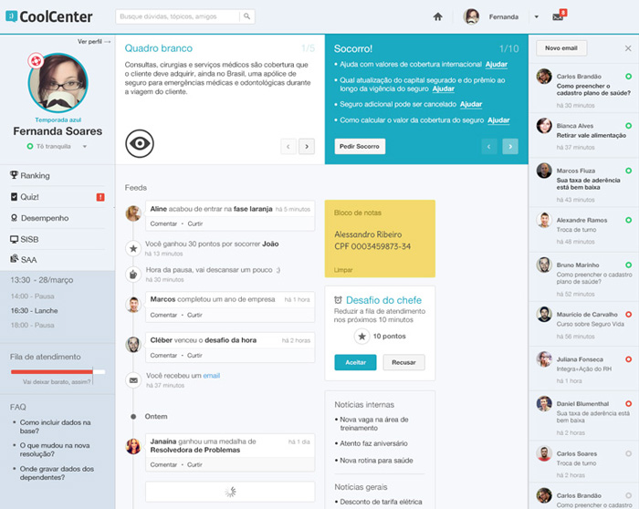

About me
Jonathan has been in love with technology ever since he was a young boy, and has made it important that his curiosity is nourished. It’s unsuprising that taking things apart and trying to make them better has become a big part
of who he is. He also think’s it’s really weird when people write about themselves in third person.
Likes Batman, hates shrimp
Stuff I’ve worked on
Órama
From 2012 to 2013 I acted as Product Manager at Orama, a leading investment fund broker. During that period I worked on the development of Android and iOS apps as well as internal metrics. The metrics system allowed us to make better decisions about product development and ushered a more visually oriented finance platform. Naturally, we followed up by creating great tools for that allowed better visualization and adminsitration of the user’s portfolio.

MJV
CoolCenter.com
Coolcenter is a spinoff project originally tailor made for one of Brazil’s largest insurance companies. The project began as an attempt to curtail the tremendous employee disatisfaction that came from using the call center’s outdated and fragmented software solutions. From scratch we built an elegant solution using lean startup methodology and gamification principles.
BestCoFounder.com
One of Rio de Janeiro's most prestigious universities had an entrepreneurial program which wasn’t meeting expectations. One of the causes was the general inability to find a cofounder or a potential business partner to venture with. Looking at well established dating websites we copied several proven mechanics in addition to adding a few new ones. Upon signing up, the user would classify himself as a designer, developer or business oriented/marketing. Every 72 hours the website would create new groups with pre-allotted quotas for each skillset. Groups would have a chatroom and would promote for all members to meet in person. The website was well received and was showcased at the 2013 SXSW talk “How to Find the Co-Founder of Your Dreams”

Levar.me
Levar was an entrepreneurial project of mine that developed over Startup Weekend 2012. It started of as a simple ridesharing app, but due to Rio’s cultural and security limitations became something almost entirely different. By connecting to Facebook, Levar.me would find a friend (or someone you had a friend in common with) nearby going to the same party or concert as you. It became a very social experience and was at times comically referred to as a “ Tinder on 4 wheels”

Accomplishments
- Semifinalist at Amazon’s startup challenge ’09
- Winner of University of San Franciscoʼs Magis leadership award ʼ09
- Google Online Marketing Challenge nominee ʼ09
- Winning team at HealthTap’s Hack4Health and Google’s Hack4Health
- Two time finalist at Health 2.0’s hackathon ’10 andʼ11
- Winner Startup Weekend - Rio de Janeiro ‘12
- Contributor for Nir Eyal and Ryan Hoover’s Hooked: How to Build Habit-Forming Products